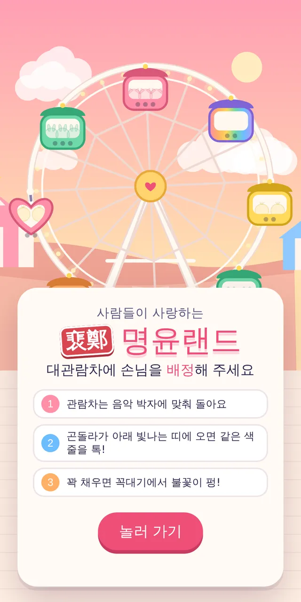
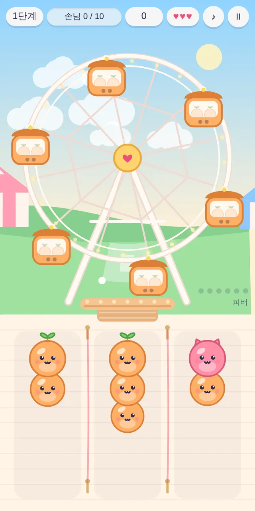

🧩 퍼즐 게임 · 무료 · 설치 없음
裵鄭 명윤랜드
“대관람차에 손님을 배정해 주세요”
- 한 판 3~10분
- 끝없는 단계
- 세로 화면
- 소리 필수
회원가입 없이 누르면 바로 시작돼요
어떤 게임인가요?
사람들이 사랑하는 놀이공원, 명윤랜드. 음악에 맞춰 대관람차가 빙글빙글 돌고, 아래에는 알록달록한 손님들이 줄을 서 있어요.
딸기냥, 귤싹이, 레몬삐약, 민트토끼, 하늘통통, 포도곰. 여섯 친구는 색과 머리 모양이 달라서 한눈에 구별할 수 있어요.
세 단계마다 하늘이 낮에서 노을로, 저녁에서 밤으로 바뀌고, 새로운 곤돌라와 돌풍 같은 깜짝 요소가 하나씩 나타나요.
이렇게 해요
- STEP 1
곤돌라를 기다려요
관람차는 음악 박자에 맞춰 돌아요. 곤돌라가 아래 빛나는 띠에 올 때를 노려요.
- STEP 2
같은 색 줄을 톡!
곤돌라와 같은 색 손님이 선 줄을 누르면 앞사람부터 타요. 박자에 딱 맞추면 「퍼펙트!」
- STEP 3
꽉 채우면 펑!
목표 인원을 다 태우면 꼭대기에서 불꽃이 터지며 다음 단계로 가요.

✨ 이런 재미도 있어요
- 콤보가 쌓이면 「피버 타임!」 점수가 두 배가 돼요.
- 세 단계마다 「보너스 타임!」 모든 곤돌라가 무지개가 되고 하트가 줄지 않아요.
- 줄이 꽉 차면 하트가 하나 줄어요. 세 개를 다 잃으면 그날 영업은 끝이에요.
- 단계마다 배경음악이 바뀌어요. 솜사탕 왈츠, 라틴 카니발, 밤하늘 디스코…
이런 분께 추천해요
- 짧게 한 판씩 즐길 게임을 찾는 분
- 리듬 게임과 퍼즐을 둘 다 좋아하는 분
- 귀엽고 밝은 분위기의 게임을 좋아하는 분
「놀러 가기」를 누르면 시작해요. 첫 단계에서는 눌러야 할 줄 위에 「톡!」 화살표가 떠서 금방 익힐 수 있어요. 끝난 단계부터 「이어하기」도 돼요.
📱 어떤 기기에서 하면 좋을까요?
- 가장 좋아요휴대폰 세로로
세로 화면에 맞춰 만든 게임이라 휴대폰이 가장 잘 맞아요. 한 손으로 톡톡.
- 좋아요태블릿 세로로
화면이 커서 곤돌라가 잘 보여요.
- 괜찮아요컴퓨터·노트북 마우스·숫자 키
화면 가운데에 세로로 길게 보여요. 숫자 1~5 키로 줄을 고를 수 있어요.
오른쪽 위 메뉴(⋮ 또는 ···)에서 「다른 브라우저로 열기」를 눌러 크롬이나 사파리로 열어 주세요. 앱 안에서는 전체 화면이 안 되고 저장이 풀릴 수 있어요.
🍎 아이폰·아이패드에서는
- ① 사파리로 열기
주소를 사파리에서 열어 주세요.
- ② 소리를 꼭 켜 주세요
박자에 맞추는 게임이라 소리가 정말 중요해요. 아이폰 옆의 무음 스위치를 풀고 음량을 올려 주세요. 소리는 화면을 한 번 누른 뒤에 나와요.
- ③ 홈 화면에 추가하기
공유 버튼(□↑) → 「홈 화면에 추가」로 열면 주소창 없이 넓게 즐길 수 있어요.
- ④ 이어서 하려면
최고 기록과 이어하기는 그 기기에 저장돼요. 아이폰 사파리는 오래 들어가지 않은 사이트의 기록을 지우기도 해요.
🤖 갤럭시 등 안드로이드에서는
크롬이나 삼성 인터넷으로 열면 돼요. 메뉴(⋮)에서 「홈 화면에 추가」를 해 두면 다음부터 더 편하게 들어올 수 있어요.
▶ 바로 해 보기
설치도, 회원가입도 필요 없어요.
명윤랜드 시작하기game.edoori.co.kr/myungyun/